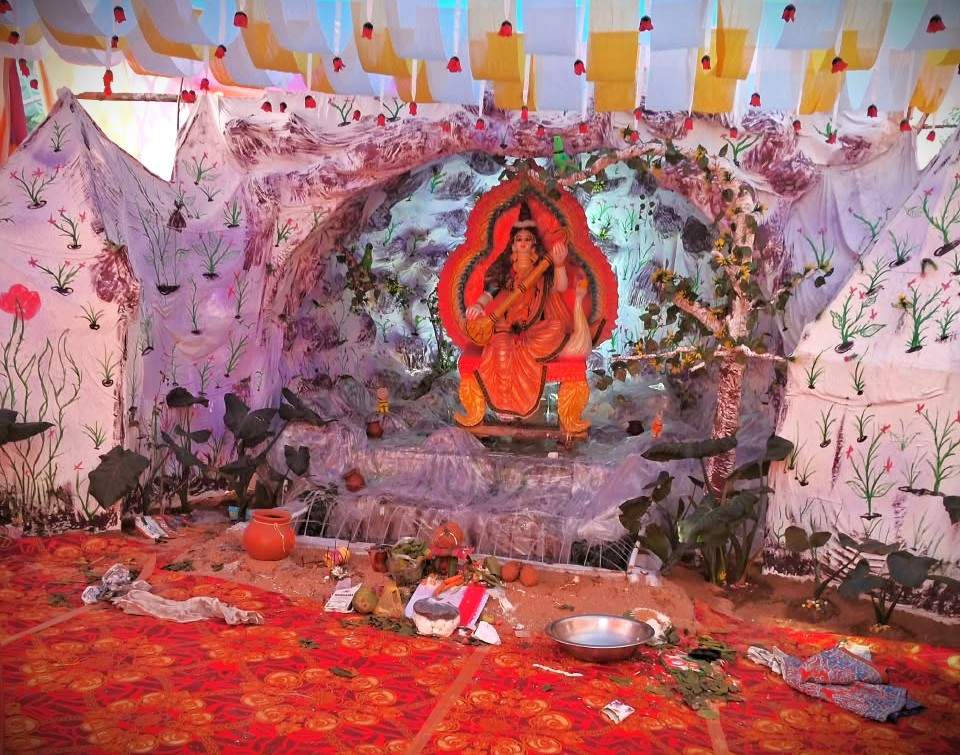

हमारे गाँव की संस्कृति, परंपरा, इतिहास और धार्मिक धरोहर को समर्पित आधिकारिक वेबसाइट।
📸 फोटो गैलरी

🏕️ सरस्वती पूजा के बारे में
सरस्वती पूजा केवल एक धार्मिक आयोजन नहीं, बल्कि ज्ञान, शिक्षा और सामूहिक उत्साह का सुंदर संगम है। माँ सरस्वती को विद्या, बुद्धि, संगीत और कला की देवी माना जाता है। इसलिए इस दिन गाँव के बच्चों और युवाओं में विशेष उत्साह देखने को मिलता है। ऐसा लगता है मानो पूरा गाँव शिक्षा और संस्कृति के रंग में रंग गया हो।
हमारे गाँव की सरस्वती पूजा की सबसे बड़ी विशेषता यहाँ बनाई जाने वाली माँ सरस्वती की प्रतिमा और पंडाल है। हर वर्ष पंडाल को एक नई कल्पना और नए स्वरूप में तैयार करने का प्रयास किया जाता है। इसकी सजावट में स्थानीय युवाओं और कलाकारों की मेहनत साफ दिखाई देती है।
पंडाल की बनावट, आकर्षक सजावट, रोशनी और माँ सरस्वती की मनमोहक प्रतिमा लोगों का ध्यान अपनी ओर खींचती है। पंचपरगना क्षेत्र में इस तरह की भव्य प्रतिमा और पंडाल देखने को कम ही मिलता है, इसलिए पूजा के दौरान आसपास के गाँवों के साथ-साथ दूर-दराज के लोग भी इसे देखने के लिए हमारे गाँव आते हैं।
हमारे गाँव की सरस्वती पूजा के अवसर पर बनाया जाने वाला पंडाल अपनी भव्यता, आकर्षक सजावट और अनोखी कल्पना के कारण विशेष आकर्षण का केंद्र बनता है। पंडाल को सजाने में गाँव के युवाओं की मेहनत, रचनात्मकता और कला-कौशल साफ दिखाई देता है। हर वर्ष पंडाल को एक नए रूप में सजाने का प्रयास किया जाता है, जिससे लोगों में उत्सुकता बनी रहती है कि इस बार माँ सरस्वती का दरबार किस नए अंदाज़ में दिखाई देगा।
पंडाल के प्रवेश द्वार से ही उसकी सुंदरता लोगों का ध्यान अपनी ओर खींचने लगती है। रंग-बिरंगे सजावटी सामान, आकर्षक झालरें, चमकती रोशनियाँ और सुंदर कलाकृतियाँ पूरे परिसर को एक अलग ही रूप प्रदान करती हैं। पंडाल के भीतर माँ सरस्वती की प्रतिमा को इस प्रकार सजाया जाता है कि उनका शांत, सौम्य और आशीर्वाद प्रदान करता हुआ स्वरूप पूरे वातावरण को भक्तिमय बना देता है। प्रतिमा के आसपास की सजावट, फूलों की सुंदर व्यवस्था और रोशनी का संयोजन देखने वालों को कुछ देर ठहरकर निहारने के लिए प्रेरित करता है।
शाम के समय जब पंडाल की रोशनियाँ जल उठती हैं, तब उसका दृश्य और भी मनमोहक हो जाता है। रंगीन प्रकाश से सजा पंडाल दूर से ही लोगों का ध्यान आकर्षित करता है। बच्चे उत्सुकता के साथ सजावट को देखते हैं, युवा अपने मोबाइल से तस्वीरें लेते हैं और बुजुर्ग भी पंडाल की सुंदरता की प्रशंसा करते हैं। ऐसा लगता है जैसे गाँव का यह पूजा स्थल कुछ समय के लिए कला, प्रकाश और भक्ति का एक सुंदर संसार बन गया हो।
हमारे गाँव की सरस्वती पूजा की खासियत केवल पंडाल का बड़ा होना नहीं, बल्कि उसकी अनोखी बनावट, सुंदर सजावट और हर वर्ष कुछ नया प्रस्तुत करने की कोशिश है। पंचपरगना क्षेत्र में इस तरह की भव्य मूर्ति और पंडाल देखने को कम ही मिलता है। यही कारण है कि पूजा के अवसर पर दूर-दूर से लोग विशेष रूप से हमारे गाँव की सरस्वती प्रतिमा और पंडाल देखने के लिए आते हैं।
जब बाहर से आए लोग पंडाल की सुंदरता देखकर उसकी प्रशंसा करते हैं, तो गाँव के लोगों को अपनी मेहनत पर गर्व महसूस होता है। यह आयोजन हमें यह भी सिखाता है कि गाँव की कला, कल्पना और सामूहिक मेहनत मिलकर ऐसी सुंदर पहचान बना सकती है, जिसे देखने के लिए लोग दूर-दूर से खिंचे चले आएँ।
कहते हैं कि किसी गाँव की पहचान केवल उसकी इमारतों से नहीं, बल्कि वहाँ के लोगों की कल्पना, कला और एकता से बनती है। हमारे गाँव की सरस्वती पूजा इसी पहचान की एक खूबसूरत तस्वीर है—जहाँ माँ सरस्वती के आशीर्वाद के साथ गाँव की प्रतिभा भी अपनी रोशनी बिखेरती है।